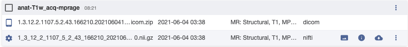
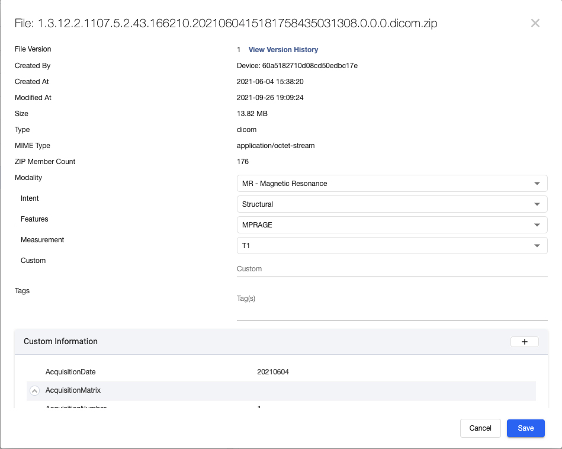
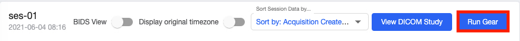
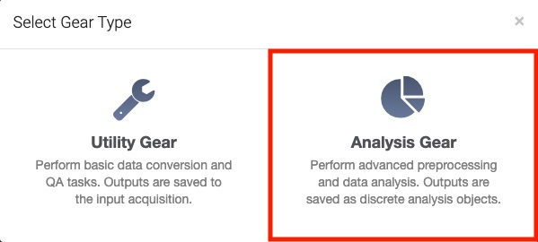
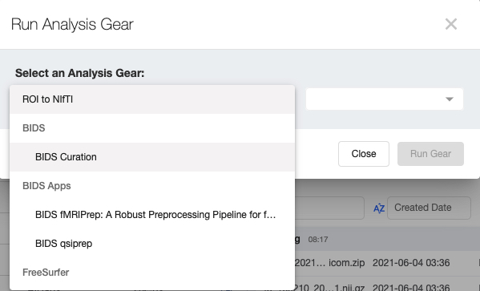
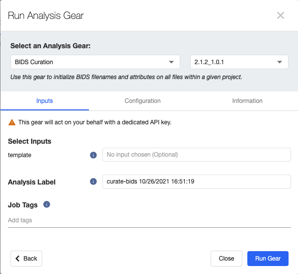

The Brain Imaging Data Structure (BIDS) is a methods of organizing neuroimaging and behavioral data. The BIDS specification has become more widespread as it provides a standard directory structure for complicated neuroimaging data. It also facilitates data sharing across sites and labs.
The raw DICOMs that come off the scanner are automatically uploaded to Flywheel via a connector located within the console room. Users are still able to manually upload data to Flywheel, but unless it is a small dataset, it is not recommended.
Project - An experiement or other collection of data
Subject - A research participant / patient, animal, or phantom
Session - A subject's visit or interaction with a modality to perform an evaluation
Acquisition - Unit of data collected during a session
File - The actual scan files (e.g., .dicom, .nii.gz) underneath an acquistion label
At the scanner console, the naming convention of the Project, Subject, and Session label will be established. For example if the scan was apart of a Project named ProtocolTests for Subject S01 and Session 01. The data will be show up on Flywheel named and located correspondingly. Commonly, you will be only interacting with the data starting from the Project level and downwards.
Each acquisition is titled as they are listed on the scanner console. For example, a T1 weighted MPRAGE acquisition may be labeled anat-T1w_acq-mprage (according to ReproIn's naming convention) and will appear as such in Flywheel. The DICOM file(s) associated with the acquisition will be named based on instance UID (e.g., 1.3.12.2.1107.5.2.43.166210.2021060415181758435031308.0.0.0.dicom.zip). Any processed files will also appear nested under the acquisition label, such as the dcm2niix converted .nii.gz file show in the figure below.

An acqusition label "anat-T1w_acq-mprage" and its dicom and nifti files.
When the DICOM is uploaded, Flywheel will also populate its metadata fields. The metadata can be viewed by clicking on the "Information" icon, , for a file (or any type of Flywheel data).

Example of Flywheel metadata for a DICOM file.
Exporting data at this stage will result in the a directory structure that follows Flywheel's data heirarchy and the files will retain their UID naming. This is typically not ideal as UID names are not human readable without training. Therefore, it is preferable to use the BIDS Curation gear, which helps rename the data files when you are exporting them from Flywheel.
The BIDS Curation Gear is software developed by Flywheel to help translate Flywheel metadata to BIDS compliant metadata. This allows the data to be downloaded from Flywheel in BIDS standard and allows other softare packages (e.g., fMRIPrep) to easily process the data. Flywheel's BIDS Curation Gear Documentation also provides additional information about the gear.
If you have a Project on Flywheel, navigate to the "Sessions" tab. From here you can check if the BIDS Curation Gear is available for your project by the following steps on Flywheel.
Select the "Run Gear" button. The button is located under the "Acquisitions" tab in the upper right hand corner.

A pop-up will appear, select "Analysis Gear".

In the "Select Gear" dropdown menu, there should be a "BIDS Curation" option.

If the BIDS Curation Gear does not exist for your project and it should, please contact John Pyles at johnp@uw.edu.
The BIDS Curation Gear works because of the BIDS Template File. The BIDS template file is a JSON file that the BIDS Curation Gear uses to translate Flywheel metadata to BIDS compliant metadata.
To learn more information about the BIDS Curation process and BIDS template, a good introduction would be to watch Flywheel's BIDS Templating Webinar. Further reading of Flywheel's documentation about how the template engine performs its processing is detailed here and a breakdown of the template file's definitions, rules, and syntax are explained here.
At CHN, we have a custom BIDS template file, which was an extension of the ReproIn template, that satisfies the most common acquisitions the center collects. This template file can be downloaded here.
Custom template files should be attached as a the Project level file. This can be achieved by going to the Project's "Information" tab. There is an "Attachments" section where files can be uploaded.
Example of the `chn-reproin-extension-project-template.json` file attached at the Project level.
During BIDS Curation Process at Step 2, you will have the opportunity to supply the "template" to be used during the curation process. The template file can be navigated to with Flywheel's file navigation system, similarly to this example.

Example of the BIDS Curation gear configuration menu.
The BIDs curation process is well documented by Flywheel as a tutorial and is highly recommended that users read it before attempting on their own. Each step below links to the relevant documentation, but this page will attempt to highlight the main points of each stage.